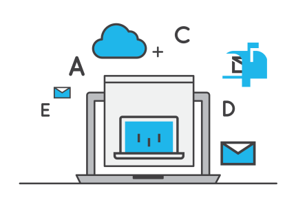

Cyenogemod Hosting 
Cyenogemod Hosting usamos el mejor servidor un sistema de pago rentable acomodado al cliente y tenga sastifacion en las trancisiones, damos servicios para paginas "Inlimitadas" con 500GB para el uso de tu pagina web a las 24/7
- Hosting (Propocionamos Hosting Turbo, Hosting de medio pago y Hosting Completo pago)
- Dominio (Disponibles".com"".net"".org"".us""es"".mx"".arg"".xyz")
- VPS (Servicio con Firewall, seguridad anti fuegos, Almacenimiento de (10DE RAM "500GB")Y (50GB 4 DE RAM)
- Juegos en Linea(Manejamos servidores Potentes "Nvidia 1080P" , "AMD R8 Hyperx G280 Y 650"
- Tecnologia cloud (Cloud "Cpanel" manejo facil del servicio en una sola parte)
- AntiDdocs(Garantia incluida en el servicio por 3 meses)
- FTP(Garantia incluida por la web 5 meses, damos por compra 2 meses Gratis.)
- Acomodidades de pago(Tenemos el mejor sistema de pago, notificado a cuotas.)

Tenemos tecnologia ultima tecnologia en cloud, panel de control servicio de seguridad en AntiDdocs, FTP y propocionados vinculos con CloudFare, actual mente tenemos VPS con 10GB de ram con 500GB de espacio de almacenimiento y damos un dominio ".com" o ".net" total mente gratis en la compra de vps y AntiDdocs, navegadores en 100% utiliza nuestro Host
- Firefox
- Internet Explores
- Safari
- Chrome
- Opera
Transcision
Tenemos la tecnologia necesaria para obtener transiciones de dinero y depositos por internet desde Paypal puedes vincular la cuenta a nuestros servicios para ventas, compra, ofertas, de cualquier computadora monitoreos desde varias computadoras en una propocionamos seguridad de envio y compra del Dinero